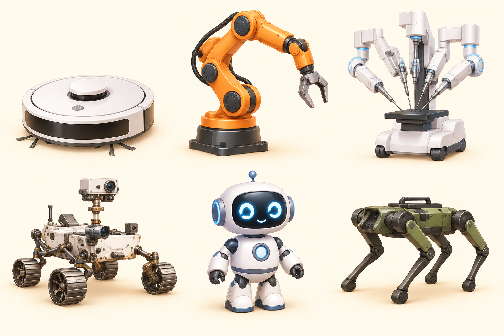
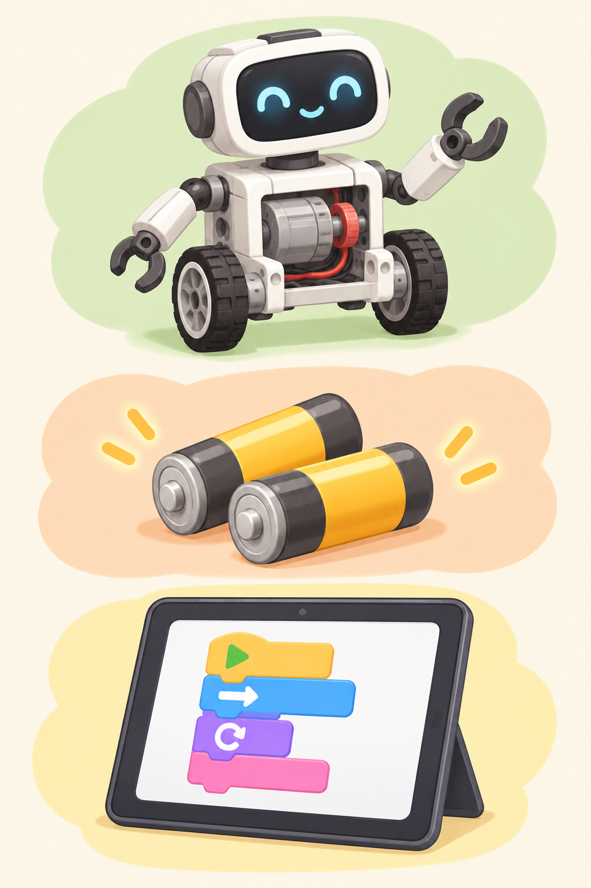
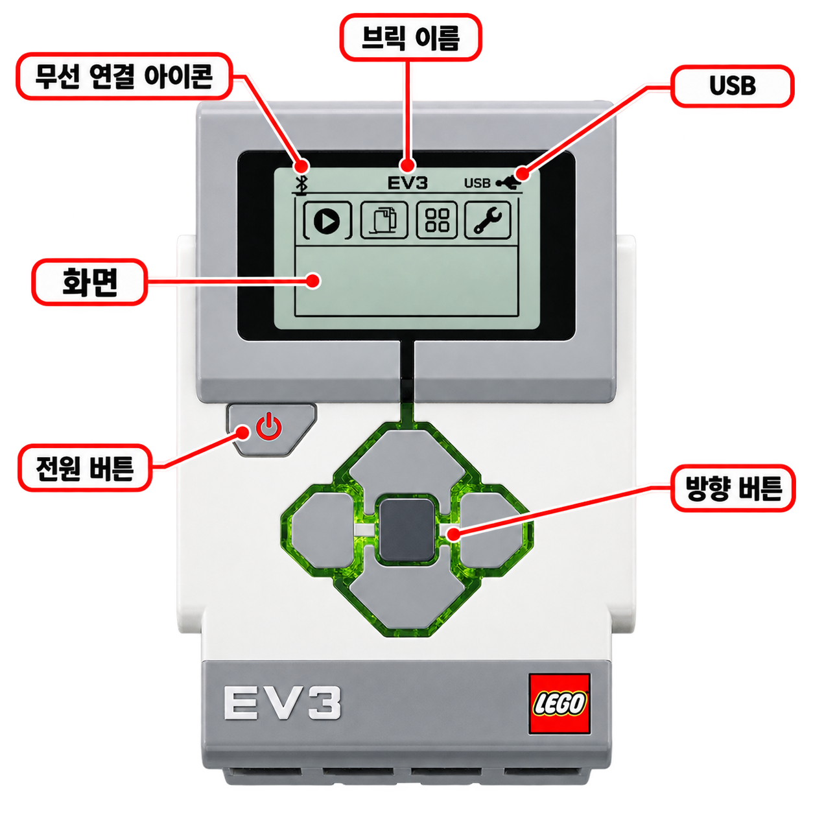
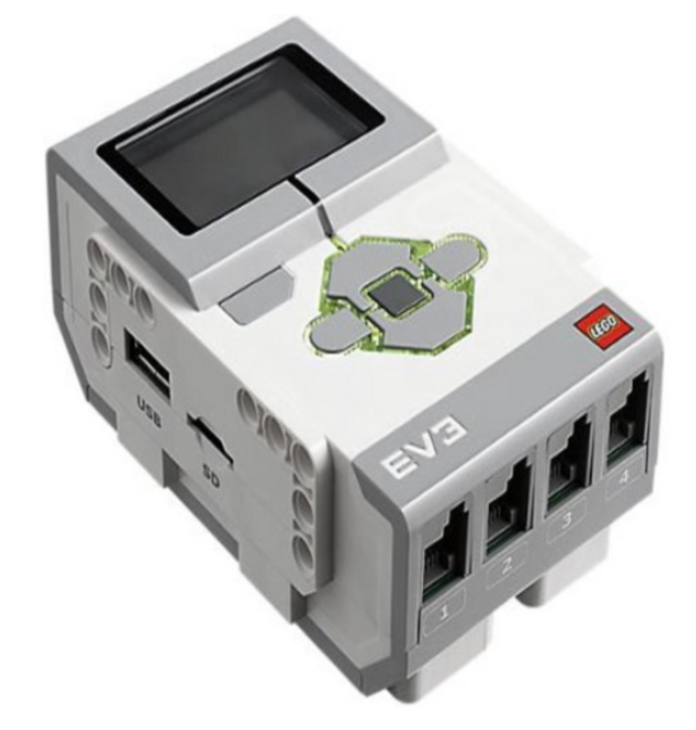
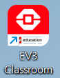
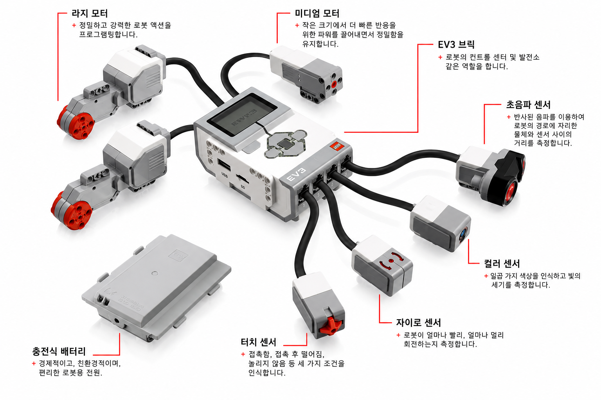
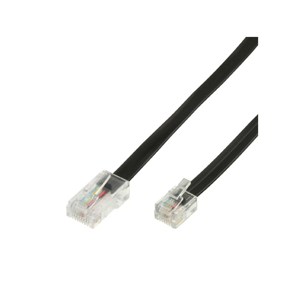

탐험 01
우리 주변의 로봇을 찾아요!
로봇을 터치해 보세요. 어디에서 우리를 도와줄까요?

나는 로봇 탐정!
마음에 드는 로봇을 하나 골라요.
발견 0 / 6
가족에게 말해 보세요.
“이 로봇은 ______을 도와줘요!”
탐험 02
로봇을 움직이는 세 가지!
PPT에서 배운 로봇의 구성! 이름을 누르고 알맞은 설명을 찾아요.

이름을 먼저 선택하세요.
탐험 03
EV3의 두뇌, 허브를 만나요
오른쪽 이름을 누르면 그림에서 위치를 찾을 수 있어요.

뒤로 버튼찾고 싶은 부분을 눌러요.
탐색 0 / 7
탐험 04
가운데 버튼으로 EV3를 깨워요!
아래 순서를 읽고 하나씩 체크하세요.

전원을 켜는 버튼가운데 버튼 ■
체크 0 / 3
탐험 05
태블릿과 EV3를 연결해요
세 가지만 기억해요. 내 브릭 이름을 꼭 확인하세요!

EV3 수업용 앱을 찾아요
연결이 어렵다면 선생님과 함께 해요.
체크 0 / 3
탐험 06
센서를 찾아라!
오른쪽 이름을 터치하면 왼쪽 그림에 동그라미와 체크가 생겨요.

센서와 모터 이름을 하나 눌러 보세요.
찾은 부품 0 / 6
탐험 07
정보를 받고, 움직이고, 연결해요
센서는 입력! 모터는 출력! 케이블로 허브와 연결해요.
🔌 RJ 케이블로 연결하기
검은 연결선으로 부품과 허브를 이어요.
입력 > 포트 1.2.3.4
출력 > 포트 A.B.C.D
출력 > 포트 A.B.C.D
뺄 때는 작은 걸쇠를 누르고 커넥터를 잡아요.

체크 0 / 2
📥 입력일까? 📤 출력일까?
정보를 받으면 입력
움직임·빛·소리로 나타내면 출력
어느 쪽일까요?
탐험 08
탐험대 복습퀴즈(1)
아래의 문제를 읽고 보기에서 정답을 찾아봅시다.
정답 0 / 4
탐험 09
탐험대 복습퀴즈(2)
아래의 문제를 읽고 보기에서 정답을 찾아봅시다.
정답 0 / 3